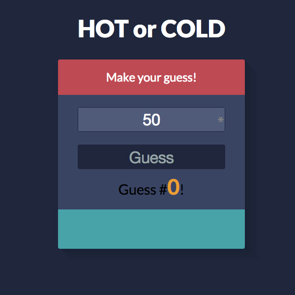
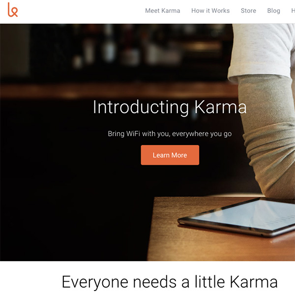
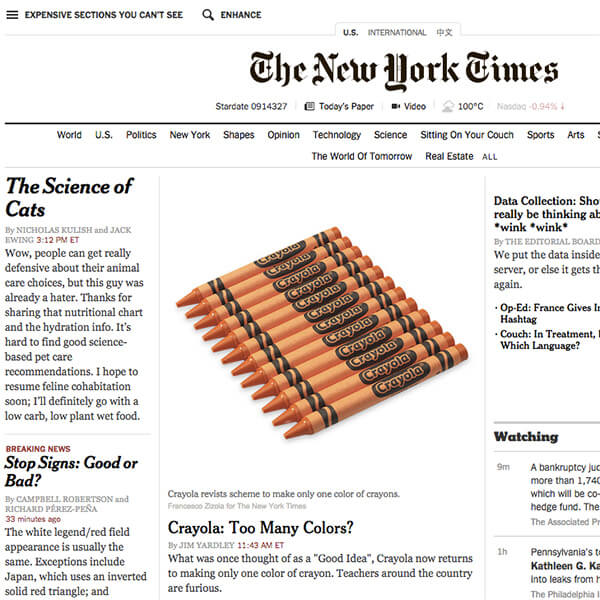

Portfolio
-
Hot or Cold

Forked HTML and CSS content to emulate getting files from other developers. Worked independently on the Javascript portion to get the game working. This project helped me learn how to use functions a bit better and complimented all the other Javascript(loops/else if) that I have been learning over the past couple of weeks. I had trouble figuring out a way to get a number to compare to tell if the user was hot or cold, but ended up using the Math.abs() function to get the absolute value of the user's number and the random number.
-
ListMaker

Created a list application using jQuery and Javascript with some basic visual features. The script appends items when they are added from the textbox, and crosses out items by adding a class when they are done. Also provided practice using Javascript's 'this' object when referenced from a function. Part of Thinkful's FEWD course.
-
Streetfighter Project
This project involved using show(), hide(), and animate() jQuery functions, as well as the on() and animate() functions to create a script that makes Ryu (A Street Fighter character) move when hovered over. He also does different actions if you click on him (HADOUKEN!) and when you press the X key (arguably the coolest pose he can do). Part of Thinkful's FEWD course.
-
FizzBuzz
This program is one of the most asked 'test' programs for web development interviews! It covers the basics of any programming language: if and for loops, code blocks, and conditional statements. It uses a conditional called a modulus to calculate the remainder of a number, and provide either a number, 'fizz' if the number is divisible by 3, 'buzz' if a number is divisible by 5, or 'fizzbuzz' if a number is divisible by both 3 and 5. It's not visually spectacular, but still important to know about.
This branch is the same program, but using a function and prompting the user for a number to FizzBuzz.
-
Resurgence Brewing Co.

Used Wordpress and
Customizr as a base theme with some edited CSS to change the look of the navigation bar as well as other small changes. Uses some beautiful pictures from Kevin Wojcik for the slider images. Also took some pictures of the food offerings and I currently update the beer list weekly.
-
BJ's Fredonia

Used Webflow for a quick Bootstrap skeleton and used existing pictures & logo from the owner. The previous page was a simple Wordpress website that didn't reflect the feel of the bar. Just a simple one page website with some neat fixed picture CSS!
-
Clone of Karma's Website

Part of a project for
Thinkful's Front End Development course. Took a old version of the
Karma website and cloned it. This project was to help me establish use of Git and Github and to use HTML/CSS techniques that I learned through the first unit of the course.
-
NYT Chrome Inspector Project

About Me
Great job reaching this section of the page! Whoever you are, you're probably a bit interested in me if you got this far. I'm a front end web developer in the Buffalo area. I'm always developing my skills on my own, and I'm working to eventually become a full stack developer. I'm experienced with HTML, CSS, jQuery, Javascript, Git, and using Wordpress. While I may not know all the languages in the world, I'm always ready to take on and learn more.
I'm also a Certified Beer Server as of April 13th 2015.
Currently, I'm learning how to use Angular.js to advance my knowledge enough in order to make single page, responsive web applications through Code School. I'm also currently attending Thinkful's Front End Web Development course (Up to unit 4!) and expect to finish it by July. I believe that learning on my own is important, more-so since web technologies are advancing so rapidly!
Where I'm from
I grew up in Williamsburg, Brooklyn, New York. Great place, great bridges, great people. If you haven't gone to Smorgasburg for a ramen burger, you're probably missing out on a lot. I eventually wanted a room of my own, but needed something a bit cheaper. That brought me to Buffalo. Well, that and the awesome people that live here!
Tidbits about Arsenio
My Hobbies
Video games are pretty cool. I'm addicted to things Nintendo makes. I like craft beer, so I decided to work in a brewery for a while. I enjoy long walks in the rain, and long naps in the sun.
My Background
I was studying Video Production in college, but I kinda started from a basic computer/programming background. I was a Computer Science 'Major' in High School, so I learned about all the basic programming essentials through BASIC, C++, and Java. I also was enrolled in Queens College back when I was a wee lad for courses in basic HTML and Javascript (even though I had no idea what how to use them most of the time and was more interested in LANing Starcraft).
How many fingers am I holding up?
Looking for a paper resume?
Look no further! Download a PDF of my resume right here!